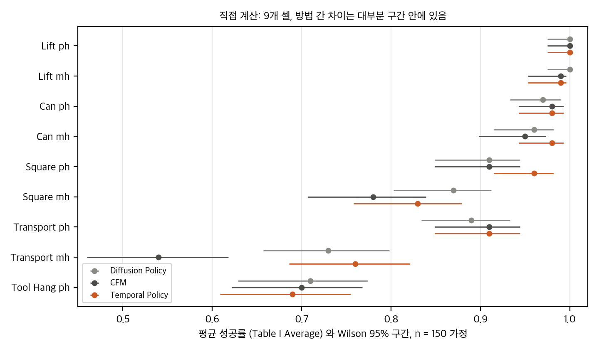
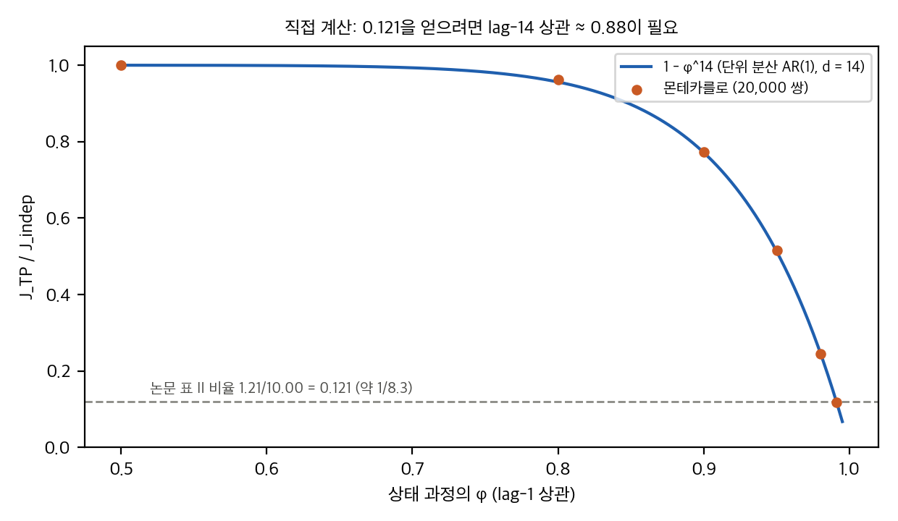
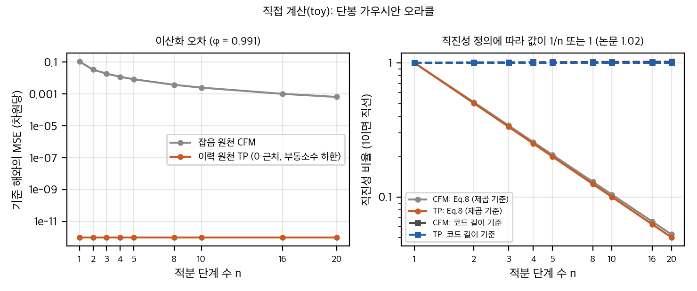
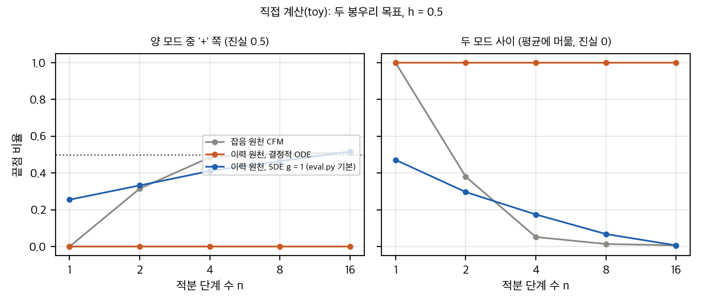

03 §3, §4).04 D8).03 §6.2, 04 D5).03 §1.1).03 §5).04 D12).
직접 계산: Table I의 Average 성공률과 Wilson 95% 구간(n = 150 가정). 방법 간 차이 대부분은 구간 안에 있습니다.
공식 시뮬 재현은 GPU가 있으면 가능하고, 이 맥에서는 학습이 불가능합니다. 실물 재현은 불가능합니다(코드 없음). 아이디어 재구현은 중간 난이도입니다.
| 항목 | 이 맥(Apple M4 Pro, 통합 메모리 약 24 GiB, MPS, CUDA 없음, torch 미설치)에서 |
|---|---|
| 공식 시뮬 재현 (Robomimic, 한 과제) | 학습 불가(CUDA 필요, 학위논문 기준 과제당 2.5–53시간 A100). 평가도 MuJoCo와 데이터가 필요 |
| 공식 실물 재현 | 불가(코드와 하드웨어 없음) |
| 아이디어 재구현 | 가능(중간 난이도). 원천을 이력으로 바꾸고 점수 보정 두 줄을 더함. 토이 수준은 이미 완료 |
| 필요한 하드웨어 | 학습에 GPU 1장(시뮬 17M 모델 기준). 지연 비교에는 CUDA 장치가 필요 |
LICENSE). 클론만 했고 재배포하지 않습니다.제목(원문 그대로): Temporal Policy: History-Initialized Action Generation for Robotic Learning from Demonstration
저자: Dylan Miller, Martin Jagersand (University of Alberta, Canada)
arXiv: 2607.29482v1, 2026-07-31 제출, cs.RO, 8쪽. 같은 저자의 학위논문(79쪽, 프로젝트 페이지에 링크)을 보조 자료로 함께 읽었습니다(paper/thesis.pdf, paper/thesis.txt).
학회: IROS 2026 채택. 학위논문 서문에 "accepted for publication at IROS 2026"이 있습니다. arXiv PDF 자체에는 학회 표기가 없습니다.
공식 코드: github.com/dmiller12/TemporalPolicy (MIT). 논문 초록과 프로젝트 페이지가 모두 이 저장소를 가리킵니다. 얕은 클론 커밋 e1e7ee5(2026-08-18)를 repo/TemporalPolicy/에 두고 대조했습니다(04_code_verification.md).
생성 모델(플로우 매칭)의 출발점을 가우시안 잡음 대신 로봇의 최근 상태 이력으로 바꾸면, 전달 비용과 직진성이 좋아지고 추론 단계 수(NFE)를 10으로 줄여도 Robomimic 성공률이 CFM과 비슷하다는 주장입니다. 다만 이 논문이 보인 효과 중 상당 부분은 데이터 쌍의 시간 간격(d = 14)과 행동 정규화에서 나오고, 공개된 샘플러에서 결정적 ODE는 사실상 조건부 평균(회귀) 을 출력합니다(03 §6, §7).
x0 ~ N(0, I)에서 행동 청크 x1로 가는 흐름을 학습합니다(Sec. I, Fig. 1). 논문은 이 원천이 "정보 없는 사전분포"라서 긴 곡선 경로와 많은 적분 단계를 낳는다고 봅니다(Sec. I, II-A).δ(x0)로 두는 "점에서 분포로" 수송입니다.t에서 원천 x0 = s[t−H+1 : t](상태 이력), 목표 x1 = s[t−H+1+d : t+d](d시점 뒤로 밀린 "미래 행동" 청크), 1 ≤ d ≤ H. d < H면 두 열이 겹칩니다(Sec. III-A).xλ = (1−λ)x0 + λx1 + ε(1−λ)wλ, λ ~ U(0,1), ε는 학습 잡음 계수. 선형 보간을 골랐다고 명시합니다.u_λ = (x1 − x0) − ε√λ z, 손실 L = E‖b_θ(xλ, x0, λ, c) − u_λ‖². 확률 미분 방정식은 식 2입니다.c는 ResNet-18 + Spatial Softmax + FiLM으로 넣습니다(Sec. III-D). 드리프트 네트워크는 1D U-Net입니다.∇x log p_λ(x|x0) = [λ u_λ − (x − x0)] / (ε² λ(1−λ)). 조건부 가우시안 구조에서 닫힌 식입니다. 이 식은 코드의 compute_score와 수치로 일치합니다(03 §7, 최대 차이 2e-9).dx = [u_λ + (g_λ² − γ_λ²)/2 · ∇log p] dλ + g_λ dw. g_λ = 0이면 결정적 흐름(ODE), g_λ > 0이면 확률적 샘플링입니다.J_temporal < J_indep이다. J_indep = 2HD, J_temporal = 2HD − 2E[x1ᵀx0](Sec. III-B). 이 유도는 각 차원이 분산 1로 표준화되었다고 가정합니다(§5 03 참조).Table I 요지(성공률 Max/Average):
| 과제 | 제안법 Average | DP Average | CFM Average |
|---|---|---|---|
| Lift ph / mh | 1.00 / 0.99 | 1.00 / 1.00 | 1.00 / 0.99 |
| Can ph / mh | 0.98 / 0.98 | 0.97 / 0.96 | 0.98 / 0.95 |
| Square ph / mh | 0.96 / 0.83 | 0.91 / 0.87 | 0.91 / 0.78 |
| Transport ph / mh | 0.91 / 0.76 | 0.89 / 0.73 | 0.91 / 0.54 |
| Tool Hang ph | 0.69 | 0.71 | 0.70 |
| NFE / 지연(ms) | 10 / 19.1 | 100 / 615.6 | 10 / 63.5 |
03 §1).J(τ) = Σ_k (‖p_{k+1} − p_k‖² + r·θ(R_k, R_{k+1})), r = 0.1 m. 식 8: J(τ) / (‖p_K − p_0‖² + r·θ(R_0, R_K)).Table II (Square ph, 50 에피소드):
| 방법 | 전달 비용 | 직진성 비율 |
|---|---|---|
| Diffusion Policy | 189.99 | 20.61 |
| CFM | 10.00 | 1.08 |
| 제안법 | 1.21 | 1.02 |
N(0, I) 원천이라 결합 비용은 같은데도 DP와 CFM의 차이가 19배입니다. 그 차이는 샘플러(100단계 DDPM 대 10단계 ODE)와 측정 방식에서 옵니다(03 §4, §8).03 §1.4).ε 값은 본문에 없습니다(학위논문: ε = 1.0으로 고정, 부록에서 ε = 0.1일 때 NFE 1 성공률 0.34, ε = 1.0일 때 0.89, 표 5.1 본문 설명).논문이 스스로 밝힌 한계:
paper/thesis.txt)| 항목 | arXiv v1 | 학위논문 | 비고 |
|---|---|---|---|
| Table II 표본 | 50 에피소드, SD 없음 | 100 에피소드, 평균 ± SD (표 5.4) | 학위논문에서 Welch 검정 가능 |
| 단일 단계 성공률 | 본문에 수치 없음(Fig. 3 왼쪽) | 표 5.3, 100 에피소드 | 제안법 Square mh 0.88 대 CFM 0.70 (Fisher p ≈ 0.003) |
| ε 절제 | Fig. 3 오른쪽, Tool Hang ph | 그림 5.1 오른쪽, 캡션은 Tool Hang, 본문은 Transport | 학위논문 본문과 캡션이 다릅니다 |
| 데이터 효율 | Square ph, DP만 비교 | Square, TP·DP·CFM 세 방법, 50–225 데모 | |
| 다중 모드 | 주장 없음 | 부록 A.2: 시계 방향·반시계 방향 두 모드를 SDE로 보여 준 정성 그림 한 장 | 정량 평가 없음 |
| 실물 지연 | 19.1 ms(시뮬), 실물 지연 언급 없음 | 실물 19.62 ms(1.78 ms × 10 + 시각 1.86 ms) | |
| 학습 epoch | 1500 | 1500 | 저장소 기본 설정은 4500(04 D6) |
| 행동 정규화 | 표준화(분산 1)라고 가정(Sec. III-B) | 모든 행동 차원을 [−1, 1]로 정규화(부록 A.1) | 분석 가정과 다릅니다(03 §2) |
04 D8). 표 수치는 코드 정의와 맞습니다.x1 = s[t−H+1+d : t+d](상태)라고 쓰고, 그림 2는 원천을 s_{t−1}(한 상태)라고 씁니다. 코드는 원천 s[t−15 : t](16개 상태)와 목표 a[t−1 : t+14](16개 행동)를 인덱스 순서대로 짝짓습니다(04 D2).03 §2, §8).real_world/ 폴더에는 비디오 기록기만 있습니다. 500 Hz 보간(학위논문 5.2절)도 공개되지 않았습니다.04 D6).eval.py는 100회입니다. 학습 중 롤아웃은 50회입니다.eval.py는 추론 SDE 계수를 1.0으로, 단계 수를 100으로 덮어씁니다(04 D5).03 §2).E[ẋ | xλ, x0, c].03 §6).재계산 스크립트는 analysis/table_check.py(→ table_check_results.json), analysis/transport_toy.py(→ transport_toy_results.json), analysis/plot_figures.py입니다. 모두 단일 스레드 numpy와 scipy로 이 맥에서 각각 수 초에서 15초 걸립니다. 설치는 하지 않았습니다(scipy는 기존 설치본).
직접 계산: Table I Average와 Wilson 95% 구간(n = 150 가정), 9셀 × 3방법.
Average는 체크포인트 10개의 평균이라 이항 표본이 아닙니다. 그래서 유효 표본 n = 150(3 시드 × 50 평가)으로 가정하고 성공 횟수를 round(평균 × 150)으로 바꿔 계산했습니다. 이 가정은 근사이고, 실제 불확실성은 이보다 클 수도 작을 수도 있습니다. Max는 학습 전체의 최댓값이라 선택 편향이 있어 검정하지 않았습니다.
| 과제 | 분할 | DP | CFM | 제안법 | 제안법 − DP (pp), Fisher p | 제안법 − CFM (pp), Fisher p |
|---|---|---|---|---|---|---|
| Lift | ph | 1.00 | 1.00 | 1.00 | 0.0, 1.00 | 0.0, 1.00 |
| Lift | mh | 1.00 | 0.99 | 0.99 | −1.0, 0.50 | 0.0, 1.00 |
| Can | ph | 0.97 | 0.98 | 0.98 | +1.0, 1.00 | 0.0, 1.00 |
| Can | mh | 0.96 | 0.95 | 0.98 | +2.0, 0.50 | +3.0, 0.22 |
| Square | ph | 0.91 | 0.91 | 0.96 | +5.0, 0.10 | +5.0, 0.10 |
| Square | mh | 0.87 | 0.78 | 0.83 | −4.0, 0.42 | +5.0, 0.38 |
| Transport | ph | 0.89 | 0.91 | 0.91 | +2.0, 0.85 | 0.0, 1.00 |
| Transport | mh | 0.73 | 0.54 | 0.76 | +3.0, 0.69 | +22.0, 0.000 (Holm 18개 보정 후 0.002) |
| Tool Hang | ph | 0.71 | 0.70 | 0.69 | −2.0, 0.80 | −1.0, 0.90 |
own_table1_ci.png가 구간을 보여 줍니다.| 비교 | 비율 | 해석 |
|---|---|---|
| CFM / 제안법 (전달 비용) | 10.00 / 1.21 = 8.26 | "nearly an order of magnitude" 근거 |
| DP / 제안법 (전달 비용) | 189.99 / 1.21 = 157 | 논문 본문은 "150배 이상" (학위논문) |
| DP / CFM (전달 비용) | 189.99 / 10.00 = 19 | 두 방법 모두 N(0, I) 원천이라 결합 비용은 같은데도 19배 |
| 직진성 | 제안법 1.02, CFM 1.08, DP 20.61 | SD 없음 |
표 II에는 SD와 시드가 없어서 신뢰구간을 만들 수 없습니다. 학위논문 표 5.4에서 SD를 얻을 수 있습니다(§1.4).
| 과제 | 분할 | CFM | 제안법 | Fisher p | Holm 9개 보정 |
|---|---|---|---|---|---|
| Square | mh | 0.70 | 0.88 | 0.0029 | 0.026 |
| Square | ph | 0.84 | 0.90 | 0.29 | 1.00 |
| Can | mh | 0.94 | 0.97 | 0.50 | 1.00 |
| Transport | mh | 0.63 | 0.67 | 0.66 | 1.00 |
| Transport | ph | 0.91 | 0.92 | 1.00 | 1.00 |
| Tool Hang | ph | 0.56 | 0.61 | 0.57 | 1.00 |
| Lift, Can ph | — | 1.00, 0.98 | 1.00, 0.98 | 1.00 | 1.00 |
DP는 1단계에서 0%입니다(Lift mh 13% 제외). 1단계 추론에서 제안법은 CFM과 같거나 조금 낫고, 유의한 차이는 Square mh 한 셀뿐입니다. §7에서 보듯 이 1단계 출력은 조건부 평균입니다.
| 비교 | 차이 또는 비율 | Welch t | p |
|---|---|---|---|
| 전달 비용, CFM 대 제안법 | 9.99 / 1.21 = 8.26배 | 72.1 | 6e-140 |
| 전달 비용, DP 대 제안법 | 190.02 / 1.21 = 157배 | 467 | 1e-292 |
| 직진성, CFM 1.09 ± 0.03 대 제안법 1.02 ± 0.03 | 0.07 | 16.5 | 2e-38 |
| 지표 | 성공 | 비율 | Wilson 95% |
|---|---|---|---|
| 전체 | 10/20 | 0.50 | [0.30, 0.70] |
| 집기 | 19/20 | 0.95 | [0.76, 0.99] |
비교 기준선이 없습니다. 20회 중 10회 성공은 0.30에서 0.70 사이의 어떤 값과도 구별되지 않습니다. 실물 결과로는 "50% 수준의 시험 결과가 있다"까지만 말할 수 있습니다.
논문 Sec. III-B는 "학습 데이터를 자유도별로 표준화했다"고 가정하고 E‖x‖² = HD를 씁니다. 코드와 학위논문 부록 A.1은 모든 행동 차원을 [−1, 1]로 정규화합니다(범위 정규화, robomimic_abs_action_only_normalizer_from_stat).
차원별 이차 모멘트를 m = E[x_d²]라 하면(정규화 후, 두 원천 모두 같은 분포라 가정):
x0 ~ N(0, I): E‖x0‖² = HD, E‖x1‖² = mHD. 따라서 J_indep = E‖x1 − x0‖² = HD(1 + m).J_indep = 2HD는 m = 1일 때만 맞습니다.J_TP = E‖x1‖² + E‖x0‖² − 2E[x1ᵀx0] = 2mHD(1 − ρ_d). 여기서 ρ_d는 d 스텝 떨어진 쌍의 상관(정상성 가정, 두 원천 분포가 같다는 가정).m = 1/3(범위 [−1, 1]의 균등 분포)이면 J_indep = (4/3)HD입니다. 논문의 2HD보다 1.5배 작습니다. 실제 데이터는 균등 분포가 아니므로 m은 데이터마다 다릅니다. 이 차이는 비율의 수치를 바꾸지만 방향은 바꾸지 않습니다.

직접 계산: J_TP / J_indep = 1 − φ^14 (몬테카를로 점 포함). 논문 비율 0.121에는 φ ≈ 0.991이 필요.
항등식 검증 (몬테카를로, 쌍 20,000개, 단위 분산 AR(1), d = 14):
| φ | ρ₁₄ = φ¹⁴ | MC: J_TP / J_indep | 1 − ρ₁₄ |
|---|---|---|---|
| 0.5 | 0.00006 | 0.99997 | 0.99994 |
| 0.8 | 0.044 | 0.962 | 0.956 |
| 0.9 | 0.229 | 0.774 | 0.771 |
| 0.95 | 0.488 | 0.515 | 0.512 |
| 0.98 | 0.754 | 0.245 | 0.246 |
| 0.991 | 0.881 | 0.1187 | 0.1189 |

직접 계산(toy): 단봉 오라클의 이산화 오차(왼쪽)와 직진성 정의에 따른 값(오른쪽). 식 기준은 1/n, 코드 기준은 1.
식 7은 스텝 거리의 제곱 합, 식 8은 끝점 거리의 제곱으로 나눕니다. K 스텝 직선 경로(스텝 길이 D/K)에서 식 7 = K·(D/K)² = D²/K이고, 식 8 = 1/K입니다. K = 10이면 0.1이고, 논문의 1.02와 맞지 않습니다. 토이에서 같은 정의를 쓰면 CFM과 제안법 모두 1/n을 보입니다(own_nfe_error.png 오른쪽, 파란 점선과 함께).
env_runner/robomimic_runner.py::compute_transport는 스텝 거리의 합(제곱 없음) 과 회전 측지 거리(×0.1)를 더하고, 직진성은 총 길이 ÷ 끝점 거리입니다. 직선 경로에서 1이 됩니다. 토이의 길이 기준 값은 제안법 1.00, CFM 1.00–1.02(n = 1–20)입니다. 논문 표 II의 1.02와 1.08과 맞습니다. 표 II 수치는 식이 아니라 코드 정의로 계산된 것으로 보입니다(04 D8).
토이(단봉 가우시안, φ = 0.991, Eq. 7 제곱 합, 평균):
| n | CFM (Eq. 7) | 제안법 (Eq. 7) | 비율 |
|---|---|---|---|
| 1 | 30.01 | 1.98 | 15.1 |
| 2 | 14.54 | 0.99 | 14.7 |
| 10 | 2.78 | 0.198 | 14.0 |
| 20 | 1.38 | 0.099 | 13.9 |
| 방법 | NFE | 파라미터 | 지연(ms) | NFE당 (ms) |
|---|---|---|---|---|
| DP | 100 | 255M | 615.6 | 6.16 |
| CFM | 10 | 255M | 63.5 | 6.35 |
| 제안법 | 10 | 17M | 19.1 | 1.91 |
추론 드리프트는 b̃ = b + ½(g² − γ²)∇log p이고, g = 0(결정적)이면 b̃ = b − ½γ²∇log p입니다. γ = ε(1 − t)입니다. 식 5의 ∇log p = (t·b − (x − x0)) / (ε² t (1 − t))를 넣으면 ε가 사라집니다:
b̃ = ((1 + t)/2) · b + ((1 − t)/(2t)) · (x − x0)
(1−t)/(2t)·(x − x0)는 t → 0에서 발산합니다. 시작 근처에서 이력 원천과의 차이가 크게 증폭됩니다(§6.3).compute_updated_drift는 g = 0에서도 보정을 넣습니다.
직접 계산(toy): 두 봉우리 목표(h = 0.5)에서 단계 수별 끝점 위치. 결정적 이력 흐름은 두 모드 사이에 머문다.
이력 원천은 점질량이라 x0 = c가 정확히 주어집니다. 가우시안 조건부 x1 | c ~ N(μ(c), Σ)에서 x = c에서 시작하면 해는 직선 a(t) = (1 − t)c + tμ에 머뭅니다. 이 선 위에서는 x − a = 0이라 점수가 0이고, 보정항이 사라집니다. 드리프트는 상수 μ − c이므로 Euler가 정확합니다.
own_mode_split.png).| 방법 (h = 0.5) | n = 1 사이 | n = 8 사이 | n = 16 사이 | n = 16, '+' 비율 |
|---|---|---|---|---|
| 잡음 원천 CFM | 1.00 | 0.014 | 0.006 | 0.509 |
| 이력 결정적 (논문 표 I 설정) | 1.00 | 1.00 | 1.00 | 0 |
이력 SDE g = 1 (eval.py 기본) |
0.47 | 0.068 | 0.006 | 0.517 |
| 이력 SDE g = 0.1 (설정 파일 기본) | 1.00 | 0.066 | 0.020 | 0.47 |
끝점 편차 배수(주입 오차 1단위당, 차원당 RMS, 200단계):
| 주입 시점 t | 보정 있음 | 보정 없음 | 식으로 본 √(1/t) (상한 추정) |
|---|---|---|---|
| 0.05 | 1.51 | 0.60 | 4.47 |
| 0.10 | 1.10 | 0.61 | 3.16 |
| 0.20 | 0.80 | 0.57 | 2.24 |
| 0.40 | 0.60 | 0.53 | 1.58 |
| 0.60 | 0.57 | 0.53 | 1.29 |
| 0.80 | 0.64 | 0.61 | 1.12 |
(t b − (x − x0))/(ε² t(1 − t))의 최대 차이는 t = 0.2, 0.5, 0.8에서 각각 7.7e-11, 1.0e-10, 1.9e-9입니다. 식 5는 정확한 드리프트에 대해 맞습니다(transport_toy.py의 eq5_check).c + b(c, 0)은 E[x1 | c]와 2e-16 차이입니다. 1단계 제안법은 조건부 평균을 내는 회귀입니다. Table I과 표 5.3의 1단계 성능은 "MSE 회귀 정책이 이 과제에서 잘 된다"는 것과 같은 말입니다. 이를 가리키는 기준선(같은 입력, 같은 목표, MSE 학습)이 논문에 없습니다(추가 실험 필요).| 요인 | 기여 | 근거 |
|---|---|---|
| 14 스텝 떨어진 쌍의 상관 (1 − ρ₁₄) | 대략 8배 | §3. ρ₁₄ ≈ 0.76–0.88 필요 |
| 측정 방식과 샘플러 단계 수 | DP 대 CFM 19배의 대부분 | §4.3. 두 방법 원천 동일 |
| 직진성 | 작음 (CFM 대비 7%) | §1.4. 결정적 점 원천에서는 직선이 자동 |
| 지연 | 모델 크기 (3.3배 중 전부) | §5. NFE 같을 때 원천 효과 0 |
| 성공률 | 1단계 회귀와 비슷 | §1.3, §7. 다중 모드 능력은 SDE 쪽 |
종합: 논문의 "전달 비용 감소"는 학습 쌍의 시간 간격에서 나오는 거리 감소입니다. 저자들의 설명 "원천이 목표에 가까워서"는 맞지만, 그 "가까움"은 학습 설계(d = 14)와 정규화가 만든 것입니다. 직선 흐름과 저단계 추론은 점 원천의 성질이라 이 방법만의 장점이 아닙니다(CFM도 토이에서 직선).
출력이 이력과 같으면 전달 비용은 0이고, 직진성은 정의되지 않습니다(분모 0). 토이(φ = 0.991)에서 복사 출력과 조건부 평균의 차이는 차원당 MSE 0.124입니다. 조건부 평균이 이 목표에서 가장 좋은 예측이므로, 복사는 그만큼 손해입니다. 전달 비용은 복사를 잡지 못합니다. 정확도(성공률, 궤적 오차)와 함께 봐야 합니다. 논문의 지표는 성공률뿐이고 복사 기준선이 없습니다.
이력이 옛 모드를 가리키고(기울기 부호), 실제 미래는 확률 h로 바뀝니다. 토이 C에서 조건부 목표는 옛 모드 1 − h, 새 모드 h입니다. 흐름은 조건부를 재현할 뿐이므로, 모드 전환에서의 오차는 조건부의 베이즈 오차입니다. 원천 종류(이력 대 잡음)와 무관합니다. 차이는 단계 수입니다. 잡음 원천은 8단계에서 모드를 나누지만, 결정적 이력 흐름은 나누지 못합니다(§6.2).
따라서 "이력이 잘못된 모드를 가리키면 실패한다"는 질문에 대한 답은 학습된 조건부가 새 모드에 확률 질량을 주지 않으면 실패하고, 결정적 샘플링은 그 질량을 0으로 만든다입니다. 소수 모드를 안정적으로 내려면 SDE 또는 잡음 원천이 필요합니다.
데이터 로더는 에피소드 시작 전 이력을 첫 상태의 복사로 채웁니다(common/sampler.py, SequenceOffsetSampler.sample_sequence의 data[:sample_start_idx] = data[sample_start_idx]). 따라서 시작 구간의 원천은 움직이지 않는 이력이고, 목표는 실제로 움직이는 행동입니다. 학습 쌍의 앞부분은 "정지 → 움직임"을 배우고, 추론은 정지 상태에서 시작하는 흐름을 씁니다. 시작 근처 오차는 §6.4에서 2.5배 증폭됩니다. 실물 시험(10 Hz, 청크 16, 실행 8)에서 시작 구간의 성공률을 따로 보고하지 않았습니다.
04 D3).| 스크립트 | 결과 | 시간 (이 맥, 1스레드) |
|---|---|---|
analysis/table_check.py |
table_check_results.json: Table I (Fisher, CMH, Holm), thesis 표 5.3·5.4 (Fisher, Welch), 지연 분해, 실물 Wilson, 결합 항등식 |
1초 미만 |
analysis/transport_toy.py |
transport_toy_results.json: A(결합 항등식 MC), B(단봉 오라클, φ = 0.991과 0.9), C(두 봉우리, h 세 값, 결정적·SDE g = 1, 0.1), D(주입 증폭), 식 5 검산 |
약 13초 |
analysis/plot_figures.py |
report/figures/own_*.png 네 장 |
약 5초 |
이 절은 §6(샘플러)의 오라클 토이를 학습된 드리프트로 바꿔 본 검사입니다. 결과는 analysis/extra_flow_mode_results.json에 있습니다.
목적. §6.2에서 오라클 드리프트로 본 "결정적 흐름은 평균으로 붕괴한다"가 작은 신경망으로 학습한 드리프트에서도 나타나는지 봅니다. 확률적 샘플러(SDE, g = 0.1, 1.0)가 두 모드를 회복하는지, 결정적 샘플러의 끝점이 샘플링 시드마다 분산 0인지도 함께 봅니다.
설정. 스크립트는 analysis/extra_flow_mode.py입니다.
transport_toy.py의 상태 과정(단위분산 AR(1), φ = 0.99, 청크 H = 16, 시차 d = 14). 목표 x1 | c는 평균 A·c에 두 봉우리 ±δ(δ = 0.5·linspace(−1, 1, 16))를 더하고 잡음 0.2를 씁니다. 이력이 가리키는 모드와 같은 모드를 고를 확률이 1 − h입니다.
결과. 값은 학습 시드 3개의 범위입니다 (n = 10).
| 설정 | 샘플러 | 사이(모드 사이) 비율 | + / − | 조건부 평균 대비 RMS | 샘플러 시드 SD |
|---|---|---|---|---|---|
| h = 0.5 | 결정적 ODE (보정) | 1.000 | 0 / 0 | 0.024 | 10⁻¹⁷ |
| h = 0.5 | 결정적 ODE (보정 없음) | 1.000 | 0 / 0 | 0.025 | 10⁻¹⁷ |
| h = 0.5 | SDE g = 0.1 | 0.992 | 0.003 / 0.005 | 0.083 | 0.074 |
| h = 0.5 | SDE g = 1.0 (식 5 점수) | 0.36 | 0.31 / 0.32 | 0.53 | 0.49 |
| h = 0.5 | SDE g = 1.0 (오라클 점수, 진단) | 0.02 | 0.47 / 0.51 | 0.46 | 0.43 |
| h = 0.5 | 완전 오라클 SDE g = 1.0 (진단) | 0.03 | 0.48 / 0.49 | 0.45 | 0.42 |
| h = 0.02 | 결정적 ODE (보정) | 0.05 | 0.48 / 0.46 | 0.08 | 10⁻¹⁷ |
| h = 0.02 | SDE g = 1.0 (식 5 점수) | 0.09 | 0.46 / 0.44 | 0.46 | 0.42 |
결론.
한계.
공식 저장소를 얕게 클론했습니다(repo/TemporalPolicy/, git 기록은 1개 커밋, e1e7ee5, 2026-08-18 "add bib", MIT). 실물 제어 코드와 데이터, 체크포인트는 없습니다. 학습과 평가는 실행하지 않았습니다(GPU와 데이터가 필요하고 설치를 하지 않기로 했습니다). 대조는 읽기만으로 했고, 수치 검증은 같은 수식을 옮긴 토이(analysis/transport_toy.py)로 했습니다.
| 항목 | 파일 (저장소 기준) |
|---|---|
| 정책과 손실 | temporal_policy/policy/temporal_policy.py (conditional_sample 97–109, predict_action 147–177, compute_loss 185–240) |
| 보간과 점수 | temporal_policy/interpolants/interpolants.py (compute_score 23–45, compute_updated_drift 47–50, LinearForecastInterpolant 52–87) |
| 짝짓기와 샘플링 | temporal_policy/couplings/coupling.py, temporal_policy/dataset/robomimic_replay_dataset.py (166–173, 295–331, _obs_to_action 374–413), temporal_policy/common/sampler.py (SequenceOffsetSampler 173–277) |
| 정규화 | temporal_policy/common/normalize_util.py (get_range_normalizer_from_stat 6–, robomimic_abs_action_only_normalizer_from_stat 110–) |
| 학습과 설정 | train.py, temporal_policy/workspace/train_workspace.py(224–225 손실, 87–90 디버그 덮어쓰기), temporal_policy/config/train_temporal_policy_unet_image_workspace.yaml, temporal_policy/config/policy/temporal_policy.yaml, temporal_policy/config/training/training.yaml, temporal_policy/config/task/{robomimic_default,square_image_abs}.yaml |
| 평가와 전달 비용 | eval.py(24–55), temporal_policy/env_runner/robomimic_runner.py (compute_transport 81–155, 롤아웃 루프 약 560–640) |
| 실물 | temporal_policy/real_world/ (video_recorder.py만 있음) |
| 테스트 | tests/ (8개, 대부분 유틸리티. 방법 대조에는 쓰지 않음) |
판정 기호: 일치, 부분 일치, 불일치, 미공개(저장소에 없음), 미검증(읽기로는 확인 불가, 실행 필요).
| ID | 항목 | 논문 | 코드 | 판정 | 영향 |
|---|---|---|---|---|---|
| D1 | 학습 목표 | 식 3: u = (x1 − x0) − ε√λ z, 보간 xλ = (1−λ)x0 + λx1 + ε(1−λ)√λ z (식 1, Alg. 1) |
temporal_policy.py:210–222: it = (1−t)x0 + t x1, gamma = √t · ε(1−t), 목표 it_dot + gamma_dot · z 와 gamma_dot = −ε√t → u = x1 − x0 − ε√t z |
일치 | — |
| D2 | 원천과 목표의 인덱스 정렬 | 본문 식: 원천 s[t−H+1 : t], 목표 s[t−H+1+d : t+d], d = H − 2 = 14(학위논문 부록 A.1). 본문 목표는 "미래 행동"이라고 씀 |
원천 창의 시작 오프셋 horizon − n_obs = 14(dataset.py:166), 패딩 pad_before = n_obs − 1 + 14 = 15(dataset.py:173). 따라서 원천 = s[t−15 … t](16개 상태), 목표 = a[t−1 … t+14](16개 행동). 같은 인덱스 j의 쌍은 14 스텝 떨어진 시점 |
일치(d = 14). 표기는 모호(식은 상태 시점, 코드는 행동 시점) | 전달 비용이 "14 스텝 동작량"이 됨(03 §3, §8) |
| D3 | 상태와 행동의 같은 표현 | Sec. III-A: 상태와 행동은 같은 표현(관절 또는 말단 자세) | _obs_to_action(dataset.py:374–413): 위치 3 + 회전(사원수 → 6D, 보정 상수 곱) + 그리퍼 gripper_qpos[..., 7:8](손가락 위치). 행동의 그리퍼는 명령(±1). 정규화만 같은 통계로 맞춤 |
부분 일치 | 그리퍼 차원은 상태(위치)와 행동(명령)이 다른 양. 실물(§IV-E)은 "그리퍼 속도"를 결합에 씀(D12) |
| D4 | 행동 정규화 | Sec. III-B: 자유도별 표준화, E‖x‖² = HD |
normalize_util.py:6–20, 110–130: 위치, 6D 회전, 그리퍼를 [−1, 1] 범위 정규화(학위논문 A.1과 같음) |
불일치(가정) | J_indep = 2HD가 HD(1+m)로 바뀜(03 §2) |
| D5 | 추론 설정 | Table I: NFE 10, 결정적 샘플링(Sec. IV-C 결론) | 학습 설정(train_..._yaml:30, 43): inference_sde_epsilon_coefficient: 0.0, num_inference_steps: 10 → 학습 중 롤아웃은 일치. 반면 eval.py:43–44는 inference_sde_epsilon_coefficient = 1.0, num_inference_steps = 101로 덮어쓴다. 정책 기본값은 0.1(temporal_policy.yaml:18) |
부분 일치(공개 평가 스크립트는 다름) | 공개 eval.py를 돌리면 SDE, 100 단계. 표 I의 NFE 10·결정적과 다른 결과가 나온다 |
| D6 | 학습 epoch | Sec. IV-A: 1500 epoch (학위논문도 1500) | training.yaml:8: num_epochs: 4500. 과제 설정과 README 명령에 덮어쓰기 없음 |
불일치(기본값) | 설정대로 학습하면 3배 길다. 논문 수치의 학습 길이를 확인할 수 없음 |
| D7 | 학습 잡음 ε | 본문 주 결과에 없음(Fig. 3 오른쪽은 추론 SDE만) | train_..._yaml:33: sde_epsilon_coefficient: 1.0. 학위논문 5.1: ε = 1.0 고정 |
미공개(논문 본문) / 일치(학위논문, 코드) | 논문만 읽으면 ε를 알 수 없음 |
| D8 | 전달 비용과 직진성 정의 | 식 7: Σ(‖Δp‖² + r·θ), 식 8: 위 값 ÷ ‖p_K − p_0‖² + r·θ |
robomimic_runner.py:81–155: 스텝 거리 합(제곱 없음) + 0.1 × 회전 각 합, 직진성 = 총합 ÷ 직선 거리(제곱 없음). 값은 unnormalize한 행동 단위(m, rad), 정규화 공간 버전(_standardized)도 기록 |
불일치(정의) | 직선 경로에서 식은 1/K, 코드는 1. 표 II의 1.02·1.08은 코드 정의와 맞음(03 §4). 어느 정의를 썼는지 논문에 없음 |
| D9 | 점수와 추론 드리프트 | 식 5: ∇log p = [λu − (x−x0)]/(ε²λ(1−λ)), Alg. 2 줄 5: b̃ = b + (g²−γ²)/2 · ∇log p |
interpolants.py:23–50: As = 1/(tσ(β̇σ−βσ̇)), cs = β̇x + (βα̇−β̇α)x0, score = As(βb − cs), drift = b + ½(g²−σ²)·score, σ = ε(1−t). temporal_policy.py:103–104에서 g = inference_sde · (1−t) |
일치 | 토이로 식 5 수치 일치 확인(최대 차 2e-9, 03 §7). g = 0에서도 보정항이 남는다(03 §6) |
| D10 | 적분 격자와 Euler 갱신 | Alg. 2: x ← x + b̃Δλ (+ g√Δλ z) |
temporal_policy.py:97–109: times = linspace(1, 0, num+1)을 뒤집어 0→1, 단계 num − 1 = 10(설정 10). mu = x + b̃·dt, x = mu + g·z·√dt |
일치 | — |
| D11 | 실행 수평 | Sec. III-E 끝, IV-E: 16개 예측, 8개 실행 | n_action_steps: 8(train_..._yaml:41), 실행 구간 [n_obs−1 : n_obs−1+8] = 인덱스 1–8(temporal_policy.py:174–177). 인덱스 0(a_{t−1})은 버림 |
일치 | — |
| D12 | 실물 제어와 결합 | Sec. IV-E: 7자유도 WAM, 10 Hz, 그리퍼 속도 결합, 500 Hz 보간(학위논문) | real_world/에는 video_recorder.py뿐. 제어 루프·보간·결합 생성 코드 없음 |
미공개 | 실물 결과는 코드로 확인 불가 |
| D13 | 평가 횟수와 시드 | Table I: 체크포인트당 50회, 시드 3개 | robomimic_default.yaml:20, 22: n_test: 50, test_start_seed: 100000(모든 실행 공통, 같은 초기 조건 블록). 시드 3개는 실행 스크립트에 없음. eval.py는 100회, 시드 49 |
일치(50회·공통 초기 조건), 미검증(시드 3개) | 공통 초기 조건은 쌍 설계지만 에피소드별 결과가 공개되지 않아 쌍 검정 불가 |
| D14 | 평가 주기와 체크포인트 집계 | 50 epoch마다 평가, Max·Average(마지막 10개) | training.yaml:16의 rollout_every: 50. Max·Average 집계 코드는 없음(wandb 로그에 의존) |
일치(주기), 미검증(집계) | — |
| D15 | 네트워크 구조 | Sec. III-D, IV-A: 1D U-Net, 17M, FiLM, Spatial Softmax | train_temporal_policy_unet_image_workspace.yaml:26, 28: use_initial: True, down_dims: [256, 512]. 파라미터 수는 읽기로 셀 수 없음(torch 미설치) |
부분 일치(구조), 미검증(17M) | — |
| D16 | 시간 표본 분포 | Alg. 1: λ ~ U(0, 1) | config/policy/sigma_distribution/rand_uniform.yaml(RandUniform(0, 1), common/distributions.py:82–90) |
일치 | — |
| D17 | 보조 손실 | 식 3(드리프트 손실만) | compute_loss가 x1_loss, vel_loss, noise_loss, accel/vel_penalty를 계산하지만 train_workspace.py:224는 loss_dict["loss"](드리프트)만 역전파 |
일치(로그용 보조 손실) | 논문에 보조 손실이 없어도 무방 |
| D18 | 에피소드 경계 패딩 | 논문에 없음 | sampler.py:270: 시작 전 이력은 첫 상태 복제, 끝 뒤는 마지막 값 복제 |
미공개(논문) | 시작 구간의 원천은 정지한 이력(03 §9.3) |
| D19 | 전달 비용을 잰 샘플 | Table II: Square ph, 50 에피소드 | 측정 코드는 있음(robomimic_runner.py, 롤아웃 중 collector에 경로 저장). 측정 시 설정(ODE 10 단계 또는 SDE 100 단계)은 확인 불가 |
미검증 | 표 II가 어느 샘플러에서 나왔는지 알 수 없음. DP 190은 확률적 샘플러 효과일 수 있음(03 §4.3) |
| D20 | 추론 시 infill_overlap |
논문에 없음 | predict_action(..., infill_overlap=False)(기본 꺼짐). 켜면 첫 두 스텝을 관측으로 고정 |
미공개(논문), 기본 꺼짐 | 논문 결과에는 꺼진 설정이 쓰였다고 보임(미검증) |
eval.py)와 결정적·10 단계(표 I) 중 어느 것을 썼는지.시뮬레이션(Robomimic):
robomimic 패키지와 MuJoCo 설치, 학습용 GPU.실물:
| 항목 | 판정 | 이유 |
|---|---|---|
| 저장소 코드 실행 | 어려움 | 코드가 device: cuda:0을 기본으로 하고 torch.autocast가 CUDA 전용입니다(robomimic_runner.py 롤아웃 루프). MPS로 바꾸는 패치는 가능해 보이지만 확인하지 못했습니다. 현재 torch가 없어 설치가 필요하고, 설치는 이번 작업에서 금지되었습니다 |
| 17M 모델 학습 | 조건부 가능(패치와 설치 승인 후) | 파라미터가 작아 메모리는 충분합니다(24 GiB). 속도는 A100보다 느릴 것으로 예상되지만 측정하지 않았습니다 |
| 255M 기준선(DP, CFM) 학습 | 불가 | 메모리와 시간 모두 과합니다(추정) |
| Robomimic 평가 | 조건부 가능 | MuJoCo와 robomimic 설치가 필요. CPU 렌더링은 느립니다 |
| 실물 | 불가 | 하드웨어 없음 |
| 지연 측정(RTX 4080 대비) | 비교 불가 | MPS 지연은 CUDA와 다르고, 논문 지연은 RTX 4080 기준입니다 |
x0 = 이력으로 바꾸는 것입니다. 나머지(보간, 손실, 샘플러)는 표준 플로우 매칭 코드에 점수 보정 두 줄을 더하면 됩니다. 토이(transport_toy.py)에 닫힌 식 드리프트와 Euler 샘플러가 이미 있어, 같은 식을 신경망 드리프트에 연결하기만 하면 됩니다.| 경로 | 가능 여부 | 필요 자원 | 이 맥에서 |
|---|---|---|---|
| 공식 시뮬 재현(Robomimic, 한 과제, 1 시드) | 가능(코드 공개) | GPU 1장(A100 급 권장), 데이터 수 GB, MuJoCo | 학습 불가, 평가는 조건부 |
| 공식 실물 재현 | 불가(코드 없음) | 로봇 하드웨어 | 불가 |
| 아이디어 재구현 | 가능(중간 난이도) | GPU 1장(시뮬 학습용) | 토이 수준까지 가능, 신경망 학습은 설치 승인 후 조건부 |
| 토이·표 재계산 | 완료 | CPU | 완료(03 §1–§7) |
LICENSE, GitHub 메타데이터 확인). README가 Diffusion Policy(MIT)에서 파생되었다고 밝힙니다. 코드는 이 저장소에 클론만 했고 재배포하지 않습니다.arxiv.org/licenses/nonexclusive-distrib/1.0/). CC BY가 아닙니다. PDF 1쪽에 IEEE 저작권 문구는 없습니다(pdftotext -f 1 -l 1로 확인: ©, copyright, IEEE, permission 문구 없음). 그래서 논문 그림과 표는 개인용 리포트와 PPT에만 넣고, 공개 산출물에서는 뺍니다. 공개물에는 직접 만든 그래프와 우리 문장만 씁니다.| ID | 주장 (논문) | 판정 | 근거 |
|---|---|---|---|
| C1 | 전달 비용을 거의 한 자릿수 줄였다(Abstract, Table II) | 수치는 일관, 해석은 과장 | CFM 대비 8.3배는 ρ₁₄ ≈ 0.76–0.88이면 가능(03 §3). DP 대비 157배의 대부분은 결합이 아니라 측정·샘플러 효과(03 §4.3). D2, D8 |
| C2 | 직진성 1.02 (Table II) | 코드 정의로만 일관 | 식 8로는 10단계 직선에서 0.1(03 §4.1). 코드 길이 기준으로는 1(D8). CFM 1.08과의 차이 7%는 통계적으로 구별되지만 작다(03 §1.4) |
| C3 | 19.1 ms 지연 (Table I) | 원천 효과와 분리되지 않음 | NFE 10으로 같은 CFM 63.5 ms 대비 3.3배 차이는 모델 크기 255M → 17M와 함께 나왔다(03 §5). 재현 불가(RTX 4080) |
| C4 | 성공률이 SOTA와 맞먹는다(Abstract, Table I) | 대체로 확인(근사) | 9셀 CMH 대 DP p = 0.69, 대 CFM p = 0.0014(Transport mh 한 셀이 대부분)(03 §1.1). n = 150 가정은 근사 |
| C5 | 데이터 효율이 더 좋다(Sec. IV-D, Fig. 4) | 확인 불가 | 그림 한 장, 시드와 오차 막대 없음. 학위논문도 같은 곡선(TP·DP·CFM) |
| C6 | 1 단계에서도 성공률이 높다(Sec. IV-A, Fig. 3, 학위논문 표 5.3) | 수치는 확인, 해석은 회귀와 구별 안 됨 | 1단계 출력 = 조건부 평균(03 §7, 차 2e-16). 회귀 기준선이 없음 |
| C7 | 결정적 샘플링이 효율적이고 다중 모드를 잃지 않는다(학위논문 부록 A.2) | 토이로 반증(결정적 모드 붕괴) | 점 원천의 결정적 ODE는 평균 경로에 머묾(03 §6.2). 다중 모드는 SDE에서만 나옴(§6.3). 부록 A.2는 한 장면의 정성 그림뿐 |
| C8 | 실물 50%(10/20), 집기 95%(19/20) | 미확인(기준선 없음) | Wilson 95%: [0.30, 0.70], [0.76, 0.99](03 §1.5). 코드 없음(D12) |
| C9 | 이력 원천이 직선 흐름을 만든다(Sec. IV-B) | 원인 해석 과장 | 점 원천에서 직선은 자동으로 나온다(03 §6.2). CFM도 토이에서 거의 직선(코드 길이 기준 1.00–1.02) |
| C10 | J_temporal < J_indep(Sec. III-B) | 확인(조건부) | 단위 분산이면 J_TP/J_indep = 1 − ρ_d, 따라서 ρ_d > 0이면 성립. 분산 1/3이면 2m(1−ρ)/(1+m)(03 §2) |
| C11 | 시작 근처 이력 초기화가 민감하다는 한계(Sec. V) | 확인 | 보정항에 의한 시작 근처 오차 증폭 2.5배(03 §6.4) |
e1e7ee5ebf689d9f65c7453893dc35df5c40d158 (2026-08-18). 얕은 클론이라 이전 기록이 없습니다.확산 정책 (Diffusion Policy, Chi et al., IJRR 2025 [3]) — 가우시안 잡음 원천, DDPM 100단계
└─ 조건부 확산 (Reuss et al., RSS 2023 [8]) — 목표 조건, classifier-free guidance
플로우 매칭 (Lipman et al., ICLR 2023 [4]) / 정류 플로우 (Liu et al., ICLR 2023 [9])
└─ 확률적 보간 (Albergo, Boffi, Vanden-Eijnden, JMLR 2025 [6]) — 원천과 목표 임의 결합, 확률 과정 일반화
└─ 확률적 보간 예측 (Chen et al., ICML 2024 [7]) — 점질량 원천, 점→분포 수송, 해석적 점수
└─ Temporal Policy (Miller & Jagersand, IROS 2026) — 원천을 로봇 상태 이력으로 교체
논문의 핵심 기여는 "원천의 선택"입니다. 보간·드리프트·손실 틀은 [6], [7]에서 가져옵니다. 저자들이 새로 낸 것은 로봇 LfD에서 이력을 원천으로 쓰는 것, 그리고 그 원천에서의 전달 비용 측정입니다(Sec. II-C, III).
| 방법 | 원천 | 논문의 평가 | 차이 |
|---|---|---|---|
| Diffusion Policy [3] | 가우시안 | 기준선 | 100 NFE, 255M |
| CFM [4] | 가우시안 | 기준선, 10 NFE | 255M, 같은 학습 설정 |
| Streaming Flow Policy [24] | 이전 행동 | "목표가 시점별 주변분포라서 행동 청크의 결합 분포를 못 보고 행동을 섞는다" | 시점별 주변 대 청크 전체 |
| VITA [25] | 잠재 시각 표현 | 디코더 학습에 ODE 역전파 필요 | 원천이 시각 잠재 |
| Trajectory Flow Matching [23] | 관측 이력 | 이중 네트워크로 확산 과정을 매개변수화 | 논문은 같은 원천을 쓰면서 단일 네트워크 |
| Schrödinger bridge / OT-CFM [15]–[20] | 최적 결합 | 로봇에 적용하기 어렵다고 판단 | 결합을 미니배치 OT로 맞춤 |
| Consistency models [10], ManiFlow [14] | — | "직교적(orthogonal)"이라고 씀 | NFE 축소를 증류로 |
nestdex/와 beyond_implicit_force/가 다룹니다. TP의 "겹침 d < H"도 인접 청크를 이어 주는 역할에서는 비슷하지만, 앙상블은 출력 평균이고 TP는 생성 원천입니다. 이 차이 때문에 TP는 샘플 다양성에 영향을 줍니다(03 §6).nestdex/analysis/02_prior_work.md 기재). TP의 원천은 "상태 이력"이고 RTC의 조건은 "이전에 실행한 청크"라서 생성 시작점과 정보가 다릅니다. 원문은 이 문서에서 읽지 않았습니다.adavla/, AdaVLA). 곡률로 적분 단계를 줄입니다. 원천은 그대로이고 샘플러만 바꿉니다. TP는 원천을 바꾸고 샘플러는 Euler입니다(03 §8).E[x1 | 이력]을 내는 회귀입니다(03 §7). 논문은 이 기준선을 실험에 넣지 않았습니다.| 폴더 | 논문의 방법 | 이 논문과 관계 | 대비 |
|---|---|---|---|
chronospolicy/ (arXiv:2610.13929) |
관측 캡처 시각과 행동 실행 시각을 RoPE로 넣고, 학습 때 센서 주기와 지연을 무작위화 | **"시간 정보를 정책에 넣는 다른 방법"**으로 가장 가깝습니다. Chronos는 입력에 시각 좌표를 넣고, TP는 생성 원천에 이력을 넣습니다 | Chronos는 시각 불일치 보정, TP는 전달 거리 단축. 둘 다 이력·시각을 활용하지만 목표가 다름 |
adavla/ (arXiv:2608.29208) |
곡률 기준으로 흐름 적분 단계 수를 줄임 | 흐름 단계 수. TP는 단계 수 10을 주장하고 AdaVLA는 평균 NFE를 역산했습니다 | AdaVLA는 원천 고정 + 샘플러 적응, TP는 원천 변경 + 고정 Euler |
openwam/ (arXiv:2609.07398) |
영상 prior + 행동 생성, 잡음 평면과 timestep shift 분석 | 원천·잡음 선택. OpenWAM 분석은 shift 5 때문에 잡음 쪽 샘플이 25배 조밀하다고 봤습니다(openwam/analysis/03) |
OpenWAM은 잡음 원천을 유지. 원천을 바꾼 TP는 같은 축(원천의 위치가 학습 신호를 어떻게 바꾸나)에서 다른 해법 |
pacevla/ (arXiv:2610.25961) |
시연보다 빠른 행동을 시간 양자화(q = 2)로 생성 | 시간 간격 d. TP의 d = 14는 원천과 목표 사이 시간 간격이라서, 간격을 바꾸면 전달 비용이 바뀝니다 | PaceVLA는 실행 속도, TP는 학습 쌍의 간격 |
beyond_implicit_force/ (arXiv:2607.14578) |
ACT 기반 힘 인지 (leader-follower δ, 전류 토크) | 같은 ACT 계열의 시간 앙상블링을 공유 | TP는 원천 변경, 이 논문은 입력 특징 변경 |
nestdex/ (arXiv:2608.13362) |
다지 손 텔레옵, 시간 앙상블링 Eq. 2의 가중 exp(−m i) | 시간 앙상블링 toy와 비교 근거 | TP는 앙상블 없음 |
IMLE-VLA(arXiv:2609.10915)는 같은 주간에 다른 작업으로 분석 중이라 이 문서에서 인용하지 않았습니다.
| 저장소 | 무엇인가 | 공식 여부 | 라이선스 | 별 | 최근 커밋 |
|---|---|---|---|---|---|
dmiller12/TemporalPolicy |
Temporal Policy 구현(시뮬 학습·평가, 실물 제어 없음) | 공식(논문과 프로젝트 페이지가 링크) | MIT | 2 | e1e7ee5 (2026-08-18, "add bib") |
real-stanford/diffusion_policy |
기준선 Diffusion Policy와 기반 코드 베이스(논문 감사의 말 명시) | 기준선 원저자 | MIT | 4,721 | 5ba07ac (2024-12-24) |
ARISE-Initiative/robomimic |
벤치마크(Lift, Can, Square, Transport, Tool Hang) | 벤치마크 원저자 | MIT | 1,602 | d309eae (2026-08-09) |
프로젝트 페이지 dmiller12.github.io/TemporalPolicyWebpage/ |
논문, 학위논문, 슬라이드 링크 | 공식 (저자) | 사이트 HTML에 CC BY-SA 4.0 링크가 있으나 템플릿 출처 표기와 함께 있어 사이트 글의 재사용 조건인지 불분명 | — | 날짜 표기 없음(2026-11-10 조회) |
학위논문 DM_thesis_latest.pdf |
같은 저자 석사 학위논문(79쪽) | 공식 보조 자료 | © Dylan Miller, 2026(표기) | — | 2026-07-24 생성 |
gh search repos로 "temporal policy", "history-initialized", "stochastic interpolant robot"을 검색해 다른 구현은 찾지 못했습니다(2026-11-10).repo/TemporalPolicy/(얕은 클론, git 제외)에 있고 .gitignore에 넣었습니다.data/0550-test_mean_score=0.969.ckpt는 README 예시로만 나오며 받지 않았습니다.